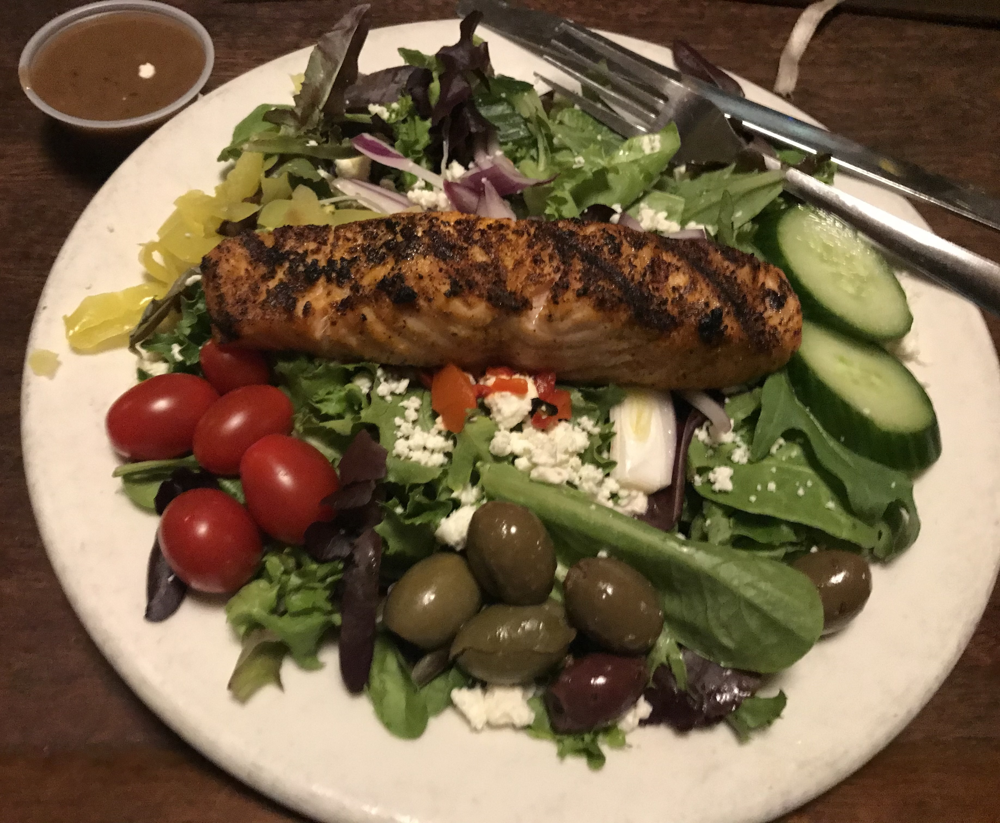

Jackson Salad Dressing

INGREDIENTS
- 1/2 onion, diced
- 3 tbs cider vinegar
- 1 tsp Coleman mustard
- 3 tsp spicey brown mustard
- 1/2 tsp sugar
- 1/2 tsp salt
- 1/4 tsp ground black pepper
- 1 cup light olive oil
- Garlic powder to taste
- Optional: grated parmesan cheese to taste
STEPS
- Puree onion and vinegar.
- Add Coleman mustard and spicey brown mustard to mix and blend well.
- Add olive oil, garlic powder, sugar, salt, pepper, and parmesan cheese.
- Blend until creamy.
HOME